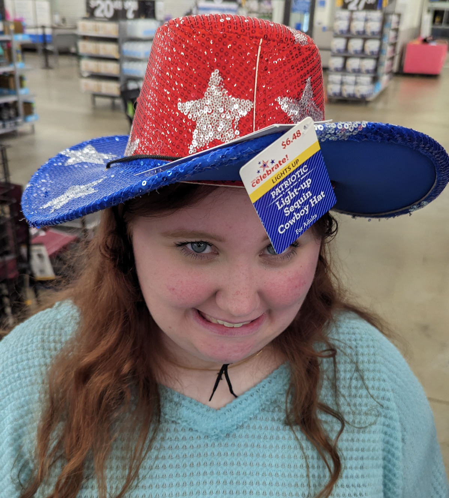

My love, Mary Grace
by Tad Blume
Hi baby! I had an idea for a website that I wanted to make for you. Essentaily I will be uploading my thoughts and feelings about you and write little love letters to you and post sweet things about you in a virtual space that lets you see what I wrote as soon as I update the website! I know you like getting notes, and that won't change! This is just an additional space where I can show you how much I love you, just in a different format. This website will be updated frequently and I will try to make it as aesthetically pleasing as possible for you.

My first letter to you - Nov 6th 2024